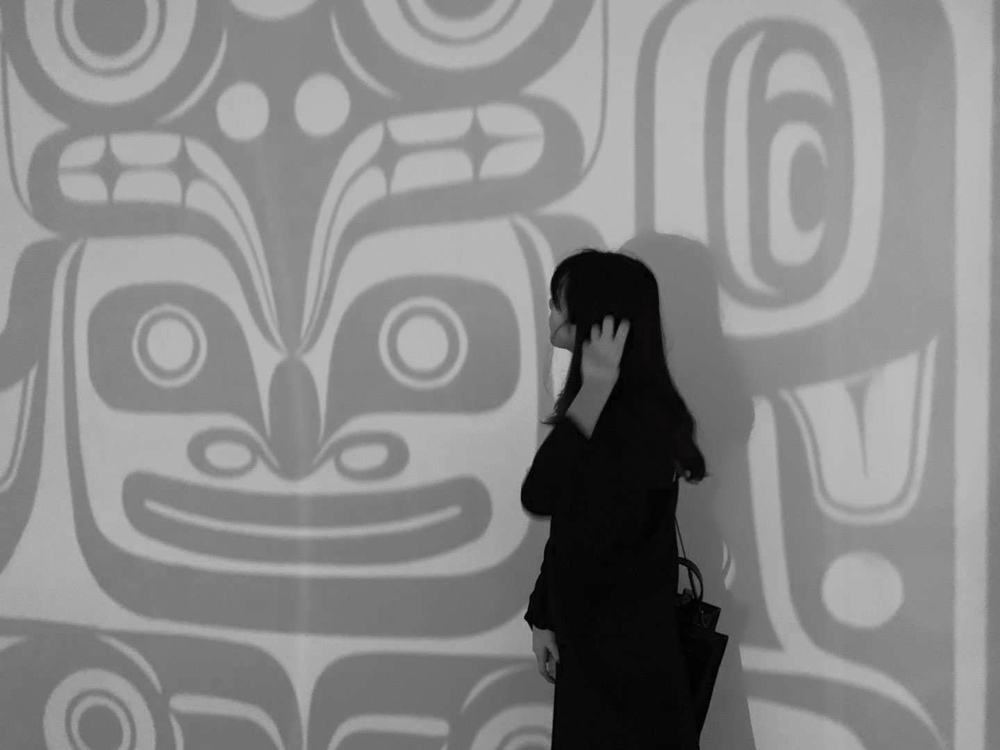

Salome is an emerging composer and sound artist born in China and raised in Canada. Her composition's thematic material centres mainly on the subject of self-identity and cognition. A member of the Berklee Interdisciplinary Arts Institute, she specializes in interactive composition with Max/MSP and TouchDesigner She has served as a composer and audio director for various film and media projects in across North America. Her work spans orchestral composition, film scoring, computer music, and sound art, with pieces featured in international film and music festivals and recognized across North America.